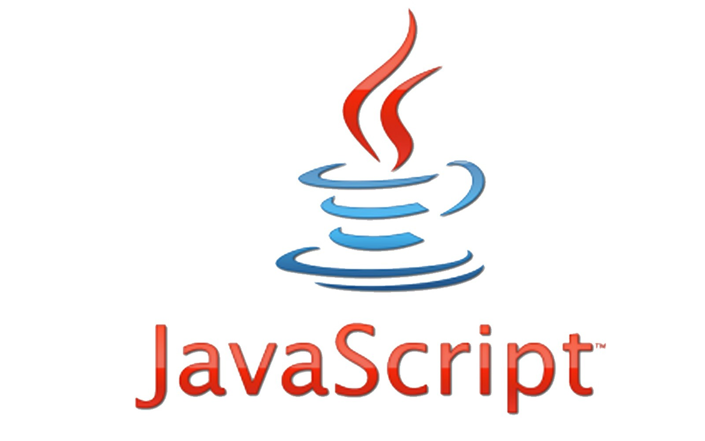
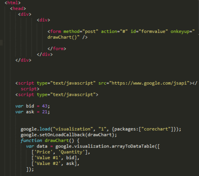

JavaScript — мультипарадигменный язык программирования. Поддерживает объектно-ориентированный, императивный и функциональный стили. Является реализацией спецификации ECMAScript (стандарт ECMA-262).JavaScript обычно используется как встраиваемый язык для программного доступа к объектам приложений. Наиболее широкое применение находит в браузерах как язык сценариев для придания интерактивности веб-страницам.Основные архитектурные черты: динамическая типизация, слабая типизация, автоматическое управление памятью, прототипное программирование, функции как объекты первого класса.На JavaScript оказали влияние многие языки, при разработке была цель сделать язык похожим на Java. Языком JavaScript не владеет какая-либо компания или организация, что отличает его от ряда языков программирования, используемых в веб-разработке.
Класс языка мультипарадигмальный: объектно-ориентированное (прототипное), обобщённое, функциональное, императивное, аспектно-ориентированное, событийно-ориентированное программирование Тип исполнения интерпретация, трансляция в байт-код Java, JIT в машинные коды Появился в 1995 Автор Брендан Эйх Расширение файлов .js, .cjs, .mjs[Спецификация 1] Выпуск ECMAScript 2022 (июнь 2022; 5 месяцев назад) Система типов динамическая, утиная Основные реализации SpiderMonkey, Rhino, KJS (JavaScript)[en], JavaScriptCore, V8 Испытал влияние Lua, Self, Си, Scheme, Perl, Python, Java, AWK, HyperTalk Повлиял на Objective-J, Dart, TypeScript
В 1992 году компания Nombas (впоследствии приобретённая Openwave) начала разработку встраиваемого скриптового языка Cmm (Си-минус-минус), который, по замыслу разработчиков, должен был стать достаточно мощным, чтобы заменить макросы, сохраняя при этом схожесть с Си, чтобы разработчикам не составляло труда изучить его. Главным отличием от Си была работа с памятью. В новом языке всё управление памятью осуществлялось автоматически: не было необходимости создавать буфера, объявлять переменные, осуществлять преобразование типов. В остальном языки сильно походили друг на друга: в частности, Cmm поддерживал стандартные функции и операторы Си. Cmm был переименован в ScriptEase, поскольку исходное название звучало слишком негативно, а упоминание в нём Си «отпугивало» людей. На основе этого языка был создан проприетарный продукт CEnvi. В конце ноября 1995 года Nombas разработала версию CEnvi, внедряемую в веб-страницы. Страницы, которые можно было изменять с помощью скриптового языка, получили название Espresso Pages — они демонстрировали использование скриптового языка для создания игры, проверки пользовательского ввода в формы и создания анимации. Espresso Pages позиционировались как демоверсия, призванная помочь представить, что случится, если в браузер будет внедрён язык Cmm. Работали они только в 16-битовом Netscape Navigator под управлением Windows.Самая первая реализация JavaScript была создана Бренданом Эйхом (англ. Brendan Eich) в компании Netscape, и с тех пор обновляется, чтобы соответствовать ECMA-262 Edition 5 и более поздним версиям. Этот движок называется SpiderMonkey и реализован на языке C/C++. Движок Rhino создан Норрисом Бойдом (англ. Norris Boyd) и реализован на языке Java. Как и SpiderMonkey, Rhino соответствует ECMA-262 Edition 5.
JavaScript является объектно-ориентированным языком, но используемое в языке прототипирование обуславливает отличия в работе с объектами по сравнению с традиционными класс-ориентированными языками. Кроме того, JavaScript имеет ряд свойств, присущих функциональным языкам — функции как объекты первого класса, объекты как списки, карринг, анонимные функции, замыкания — что придаёт языку дополнительную гибкость. Несмотря на схожий с Си синтаксис, JavaScript по сравнению с языком Си имеет коренные отличия: объекты с возможностью интроспекции; функции как объекты первого класса; автоматическое приведение типов; автоматическая сборка мусора; анонимные функции. В языке отсутствуют такие полезные вещи, как: стандартная библиотека: в частности, отсутствует интерфейс программирования приложений по работе с файловой системой, управлению потоками ввода-вывода, базовых типов для бинарных данных; стандартные интерфейсы к веб-серверам и базам данных; система управления пакетами, которая бы отслеживала зависимости и автоматически устанавливала их.